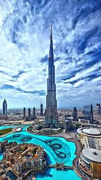
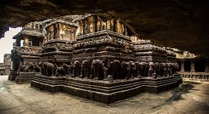
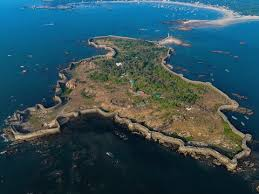
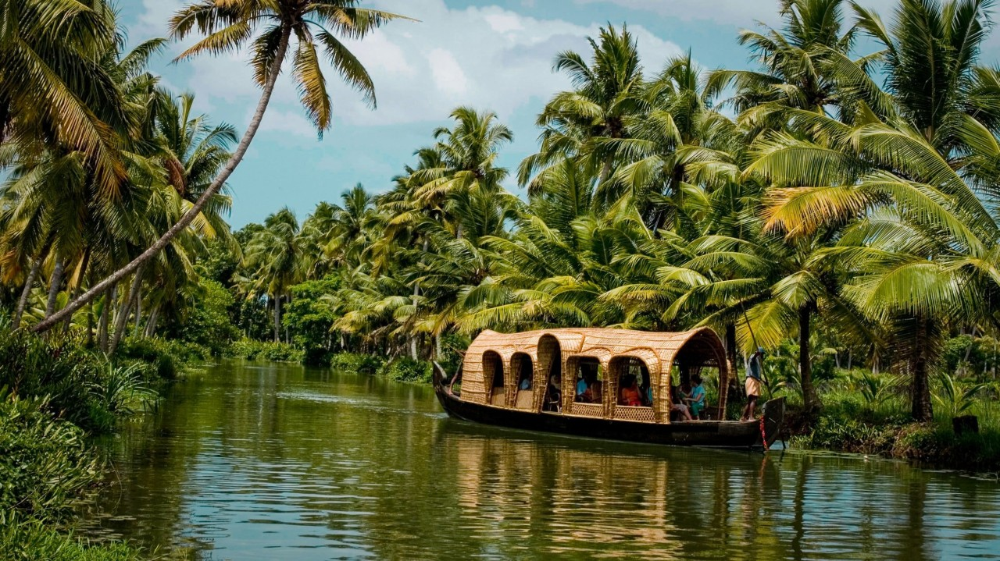
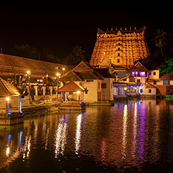

Favourite Travel Destination
| Destination Name | Country | Best Time To Visit | Image |
|---|---|---|---|
| Paris | France | Winter | |
| Dubai | Emerates | All Season |  |
| Taj Mahal | India | All Season |  |
Must Visit Places !!
Delhi |
||
Taj Mahal |
Red Fort |
Lotus Temple |
|
 |
 |
| Located in Agra, India, the Taj Mahal is a white marble mausoleum built by Mughal Emperor Shah Jahan in memory of his wife Mumtaz Mahal. Completed in 1653, it is a UNESCO World Heritage Site and is renowned for its stunning architecture and intricate inlay work. | Located in Delhi, the Red Fort (Lal Qila) is a historic fort built by Mughal Emperor Shah Jahan in 1648. Made of red sandstone, it was the main residence of the Mughal emperors for nearly 200 years and is an iconic symbol of India's independence. | Situated in New Delhi, the Lotus Temple is a Baháʼí House of Worship, completed in 1986. Its unique lotus-shaped structure, made of white marble, symbolizes peace and purity. Open to people of all faiths, it serves as a place for meditation and reflection. |
Maharashtra |
||
Kass Pathar |
Ajantha Caves |
Sindudurg Fort |
 |
 |  |
| Known as the "Valley of Flowers," Kaas Plateau is a UNESCO World Natural Heritage Site located in Maharashtra, India. This biodiversity hotspot blooms with thousands of wildflowers during the monsoon season and is famous for its stunning natural beauty and rare plant species. | Situated in Maharashtra, the Ajanta Caves are a series of 29 rock-cut Buddhist cave monuments dating back to the 2nd century BCE. These caves are known for their stunning frescoes, sculptures, and architectural grandeur, making them a UNESCO World Heritage Site. | Located on an island off the coast of Maharashtra, Sindhudurg Fort was built by the Maratha ruler Shivaji in the 17th century. The fort is a symbol of Maratha naval power and is known for its strategic location and unique design, surrounded by the Arabian Sea. |
Kerala |
||
Munar |
Padnabham Temples |
kochi |
|  |  |  |
| Known as the "Valley of Flowers," Kaas Plateau is a UNESCO World Natural Heritage Site located in Maharashtra, India. This biodiversity hotspot blooms with thousands of wildflowers during the monsoon season and is famous for its stunning natural beauty and rare plant species. | Situated in Maharashtra, the Ajanta Caves are a series of 29 rock-cut Buddhist cave monuments dating back to the 2nd century BCE. These caves are known for their stunning frescoes, sculptures, and architectural grandeur, making them a UNESCO World Heritage Site. | Located on an island off the coast of Maharashtra, Sindhudurg Fort was built by the Maratha ruler Shivaji in the 17th century. The fort is a symbol of Maratha naval power and is known for its strategic location and unique design, surrounded by the Arabian Sea. |